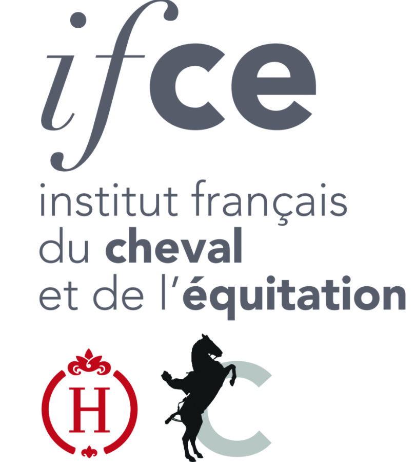

Projets
Projects
Social Brain
En cours OngoingChez les espèces à reproduction saisonnière comme le mouton, la fonction de reproduction alterne au cours de l'année entre un état actif et inactif. Cette cyclicité annuelle est imposée par la durée du jour, ou photopériode. Le signal photopériodique est intégré par un système neuroendocrinien complexe qui régule l'activité de l'axe hypothalamo-hypophyso-gonadique (HPG) au niveau de l'hypothalamus, ainsi que l'expression des comportements sociosexuels. Néanmoins, l'inhibition de la fonction de reproduction par la photopériode peut être levée chez la brebis par une simple interaction sociale avec un bélier sexuellement actif. Cette interaction sociale augmente l'activité de l'axe HPG en quelques minutes et restaure la fonction reproductrice et l'expression des comportements sociosexuels en trois semaines. Ce modèle, appelé « effet mâle » (EM), offre une opportunité unique d'étudier les bases neuronales de la communication sociale chez les mammifères et la façon dont les animaux adaptent le fonctionnement de leur cerveau à un environnement social nouveau.
En couplant l'imagerie fonctionnelle à un suivi biocomportemental, l'objectif de ce projet est de préciser la nature de ces modifications induites par cette stimulation sociale au niveau du cerveau, et de découvrir la séquence des événements neurologiques responsable de la restauration de la fonction de reproduction dans ce modèle.
In seasonal breeders like sheep, reproductive function alternates over the year between an active and an inactive state. This annual cyclicity is driven by day length, or photoperiod. The photoperiodic signal is integrated by a complex neuroendocrine system that regulates the activity of the hypothalamo-pituitary-gonadal (HPG) axis at the level of the hypothalamus, as well as the expression of sociosexual behaviours. Nevertheless, the photoperiodic inhibition of reproductive function can be lifted in ewes through a simple social interaction with a sexually active ram. This social interaction increases HPG axis activity within minutes and restores reproductive function and the expression of sociosexual behaviours within three weeks. This model, known as the "male effect" (ME), offers a unique opportunity to study the neuronal basis of social communication in mammals and how animals adapt their brain function to a new social environment.
By combining functional imaging with biobehavioural monitoring, the objective of this project is to clarify the nature of these modifications induced by this social stimulation in the brain, and to uncover the sequence of neurological events responsible for the restoration of reproductive function in this model.
EquisoBrain
Terminé CompletedLes interactions sociales façonnent le développement à la fois physiologique et comportemental de la descendance, et l'on sait qu'un manque de soins ou la perte précoce du ou des parents pendant l'enfance favorise le développement de comorbidités physiologiques et/ou psychiatriques à l'âge adulte, aussi bien chez l'animal que chez l'humain. La façon dont les comportements affiliatifs influencent le développement futur de la descendance reste une question ouverte. Nous avons utilisé ici le cheval domestique (Equus caballus) comme modèle pour explorer cette question. En combinant imagerie par résonance magnétique avec un suivi biocomportemental longitudinal et une modélisation statistique multivariée avancée, nous avons montré que la présence maternelle favorise la maturation de régions cérébrales impliquées à la fois dans le comportement social (cortex cingulaire antérieur et cortex rétrosplénial) et dans la régulation physiologique (hypothalamus et amygdale). Par ailleurs, les poulains ayant bénéficié d'une présence maternelle prolongée présentaient une connectivité plus élevée du réseau du mode par défaut, de meilleures compétences sociales et alimentaires, ainsi que des concentrations plus élevées de lipides circulants (triglycérides et cholestérol).
Ces résultats soulignent le rôle central des interactions sociales dans le développement physiologique et comportemental chez les animaux sociaux.
Social interactions shape both the physiological and behavioural development of offspring, and it is known that a lack of care or the early loss of one or both parents during infancy promotes the development of physiological and/or psychiatric comorbidities in adulthood, in both animals and humans. How affiliative behaviours influence the future development of offspring remains an open question. Here, we used the domestic horse (Equus caballus) as a model to investigate this question. By combining magnetic resonance imaging with longitudinal biobehavioural monitoring and advanced multivariate statistical modelling, we showed that maternal presence promotes the maturation of brain regions involved in both social behaviour (anterior cingulate cortex and retrosplenial cortex) and physiological regulation (hypothalamus and amygdala). Additionally, foals that benefited from prolonged maternal presence showed higher default-mode network connectivity, better social and feeding competence, and higher concentrations of circulating lipids (triglycerides and cholesterol).
These findings underscore the central role of social interactions in the physiological and behavioural development of social animals.

Financement : L'Institut français du cheval et de l'équitation et Marie Skłodowska-Curie Actions Funding: the French Institute for Horse and Riding (IFCE) and Marie Skłodowska-Curie ActionsSheepImaPain — nouvelle approche éthologique et pharmacologique pour soulager la douleur chronique inflammatoire chez le mouton
SheepImaPain — a new ethological and pharmacological approach to relieving chronic inflammatory pain in sheep
En cours OngoingAu niveau individuel, l'expression d'un comportement est étroitement associée à l'ajustement continu du milieu interne (homéostasie). En effet, une rupture de l'homéostasie d'un individu (par exemple une douleur) va modifier l'expression des comportements sociaux (agression, isolement). Ces modifications comportementales sont intégrées par les congénères et vont directement impacter l'expression de leurs comportements ainsi que leur physiologie. Ce phénomène est connu sous le terme de contagion émotionnelle. Les recherches antérieures chez l'animal (rongeurs, primates, etc.) révèlent que la contagion émotionnelle joue un rôle primordial dans l'adaptation d'un individu à un nouvel environnement social. Ces études démontrent que de multiples circuits neuronaux sont impliqués dans ces processus et que des mécanismes de plasticité multi-niveaux (neurogenèse, myélinisation) sont indispensables pour adapter le fonctionnement cérébral au nouvel environnement social afin de favoriser l'expression de comportements adaptés. Néanmoins, les mécanismes centraux de la contagion émotionnelle restent encore mal compris, et leur étude est indispensable pour améliorer notre compréhension du fonctionnement du cerveau des mammifères. Aujourd'hui, les avancées récentes en neuroimagerie nous aident à étudier ces mécanismes adaptatifs à l'échelle du cerveau entier.
At the individual level, the expression of a behaviour is closely linked to the continuous adjustment of the internal environment (homeostasis). Indeed, a disruption of an individual's homeostasis (for example, pain) alters the expression of social behaviours (aggression, isolation). These behavioural changes are perceived by conspecifics and directly affect their own behaviour and physiology. This phenomenon is known as emotional contagion. Previous research in animals (rodents, primates, etc.) shows that emotional contagion plays a key role in an individual's adaptation to a new social environment. These studies demonstrate that multiple neuronal circuits are involved in these processes and that multi-level plasticity mechanisms (neurogenesis, myelination) are essential to adapt brain function to the new social environment in order to promote the expression of adapted behaviours. Nevertheless, the central mechanisms of emotional contagion remain poorly understood, and their study is essential to improve our understanding of the mammalian brain. Today, recent advances in neuroimaging are helping us study these adaptive mechanisms at the whole-brain scale.
MEAKODOR
Démarrage StartingDans ce projet, nous étudierons les mécanismes cellulaires et moléculaires sous-tendant l'effet mâle, qui restent encore largement méconnus. Décrypter les circuits à l'origine de cette réponse est essentiel pour pouvoir remplacer les traitements hormonaux actuels, qui soulèvent d'importantes questions éthiques et de bien-être. Notre hypothèse de recherche est que les neurones à kisspeptine situés dans l'amygdale médiane participent au traitement des signaux olfactifs sociaux et pourraient constituer un « centre de traitement », agissant de concert avec les populations neuronales hypothalamiques à kisspeptine pour ajuster finement la fonction de reproduction en fonction du contexte social de l'animal.
In this project, we will study the cellular and molecular mechanisms underlying the male effect, which remain largely unknown. Deciphering the circuits behind this response is crucial in order to replace current hormonal treatments, which raise major ethical and public welfare concerns. Our research hypothesis is that kisspeptin neurons located in the medial amygdala are involved in processing social olfactory cues and could act as a "processing hub", working in concert with hypothalamic kisspeptin neuronal populations to finely tune reproductive function according to the animal's social context.